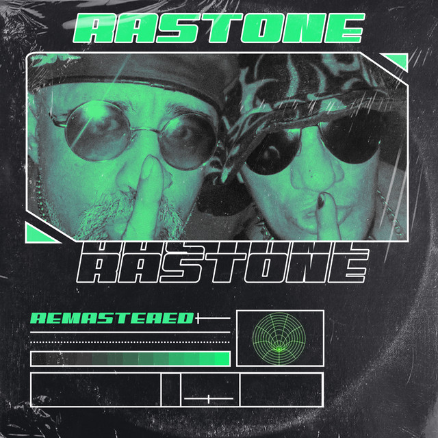
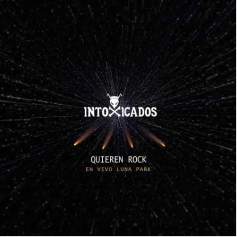
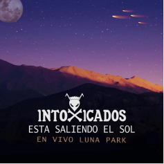
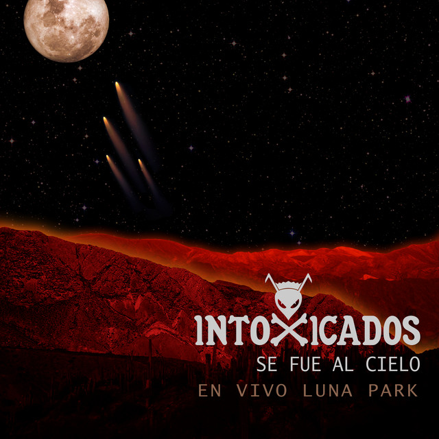
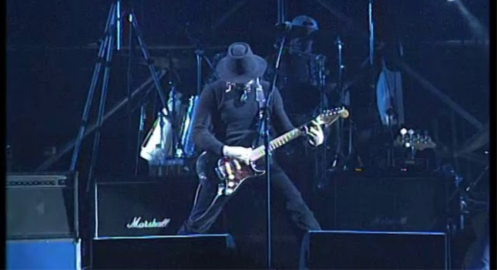
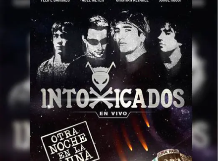
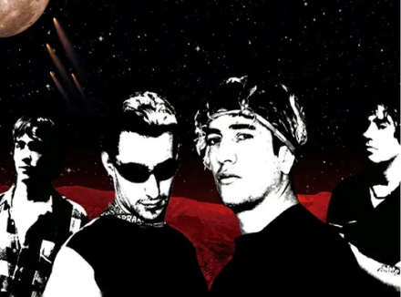

Intoxicados es una banda de rock argentina liderada por Pity Álvarez, ex vocalista de Viejas Locas. La historia de esta banda comienza en el año 2000, tras la separación Viejas Locas. La banda fue integrada por: Pity Álvarez: voz y guitarra, Felipe Barrozo: guitarra y coros, Jorge Rossi: bajo y coros, Abel Meyer: batería, Adrián Pérez: teclado y coros, Ezequiel Rodríguez: armónica, Victor Djamkotchian: saxofón, Fabio Cuevas: percusión.
DISCOS
SENCILLO

Rastone (Remastered) (2022)
SENCILLO

Quieren Rock (En Vivo Luna Park) (2021)
SENCILLO

Está Saliendo el Sol (En Vivo Luna Park) (2021)
SENCILLO

Se Fue al Cielo (En Vivo Luna Park) (2020)
VIDEOS

Inédito en vivo (All Boys 2006)
NOTICIAS
20 AGOSTOINTOXICADOS
NUEVO DISCO DE INTOXICADOS"Otra noche en la luna (Episodio II)", nuevo disco de Intoxicados

LEER MÁS
27 JULIOINTOXICADOS
INTOXICADOS ADELANTA SINGLE DE SU NUEVO DISCOIntoxicados presenta “Quieren Rock, en vivo Luna Park”

LEER MÁS
9 FEBREROINTOXICADOS
INTOXICADOS PRESENTA DE LA GUITARRA - EN VIVO LUNA PARKIntoxicados presenta "De La Guitarra - En Vivo Luna Park", corte de su álbum “Otra noche en la Luna (Episodio I)”